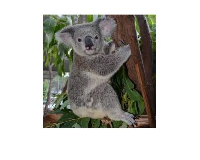
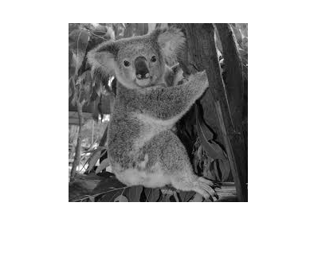
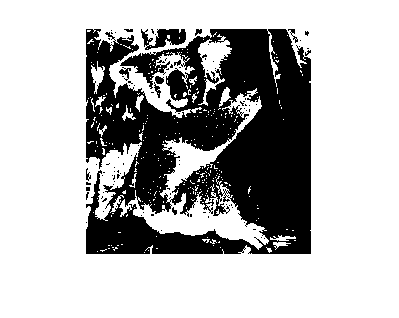
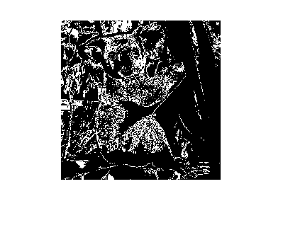
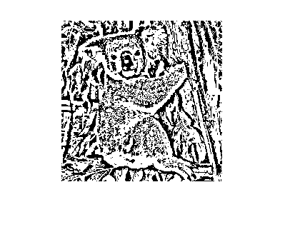
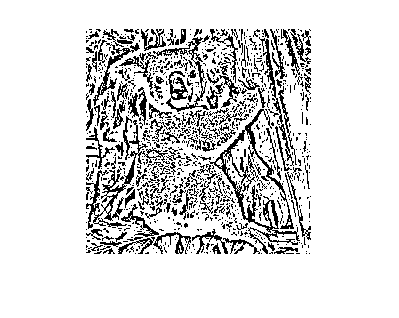
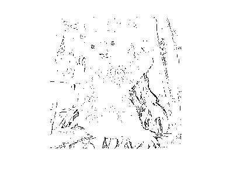
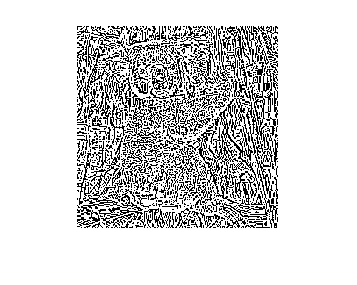

Contents
clear all; close all;
Zadanie 1.1
Wykorzystując środowisko MATLAB z biblioteką OpenCV dokonać binaryzacji obrazu kolorowego po uprzedniej jego konwersji do skali szarości. W celu konwersji do skali szarości możliwe jest wykorzystanie funkcji cv.cvtColor z parametrem RGB2GRAY. Binaryzacja metodą Otsu może być wykonana za pomocą polecenia cv.threshold.
image = imread("koala.jpg"); % Dodanie szumu salt and pepper do obrazka. Należy odkomentować linijke ponizej dla zadania 4 % porównanie obrazu nastepuje w diffCount. % image = imnoise(image, 'salt & pepper'); imshow(image); figure %to gray img_gray = rgb2gray(image); img_hist = imhist(img_gray); bar(img_hist); imshow(img_gray); figure %binarize TW = 116; %próg binaryzacji img_bin = img_gray > TW; imshow(img_bin); figure %binarize otsu th = graythresh(img_gray)*255; %th  
Zadanie 1.2
Zbadać wpływ sposobu konwersji obrazu kolorowego do skali szarości na wynik binaryzacji metodą Otsu wybierając odpowiednią składową reprezentującą jasność z modelu CIE XYZ uzyskanych za pomocą funkcji cv.cvtColor.
img_cvt = cv.cvtColor(image, 'RGB2XYZ'); %zmiana palety barw Y = img_cvt(:, :, 2); %wybór palety jasności img_cvt_th = graythresh(Y) * 255; %otsu obrazu img_cvt_bin = Y > img_cvt_th; %binaryzacja img_xor = bitxor(img_cvt_bin, img_bin); %xor obrazu róźnic imshow(img_xor); figure diffCount = sum(img_xor, 'all'); %ilość elementów różniących się %diffCount
Zadanie 1.3
Powtórzyć eksperymenty dla progowania adaptacyjnego z użyciem funkcji cv.adaptiveThreshold z paramaterami „Mean” oraz „Gaussian” określającymi wybór metody progowania adaptacyjnego.
img_adapt_mean = cv.adaptiveThreshold(img_gray, 'BlockSize', 11); imshow(img_adapt_mean); figure img_adapt_gauss = cv.adaptiveThreshold(img_gray, 'Method', 'Gaussian', 'BlockSize', 11); imshow(img_adapt_gauss); figure 
Zadanie 1.5
Wykorzystać dostępne implementacje innych metod binaryzacji (Sauvola, Niblack, Kapur, Rosin, BHT) i porównać uzyskane wyniki z metodą Otsu.
%figure;
imshow(savoula(img_gray));
figure
imshow(niblack(img_gray));
 